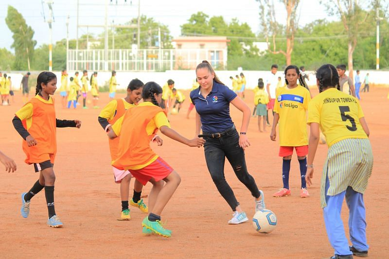

Grassroot Programs

Provides regular and sustainable access to participation in sport, through village clubs, subcentres and schools. Currently, 116 centres with 7,741 children. Well before RDT even had a dedicated Sports sector, it was involved in sports education in the district by providing quality sports material to various rural government high schools and village youth cricket teams. This came about because of many young Physical Education teachers who came forward to request RDT's help in their school's sports curriculum. These schools became the nurseries which produced budding players who later came into RDT's academies.
It was the various school and village clubs which yielded footballers for the football academy since 2010, and produced students for Judo academy in 2015. Children representing these schools participate annually in the RGKA (Rural Competitions), SGFI (School Competitions), University and Open (Federation) Competitions at district, state, and national levels. Currently, 117 grassroots program centres are operational across Ananthapuram district catering to a total of 8, 255 youth (3,481 girls and 4,774 boys) participating in regular and weekly sporting activity. Our grassroots centres cater to 4 sporting disciplines: Cricket, Football, Hockey, and Judo. The programs serve to provide youth with regular and sustainable access to participation in sport and are run through Mandal (village) clubs, subcentres as well as government schools.
Children participating in the grassroots programs are provided the following support: